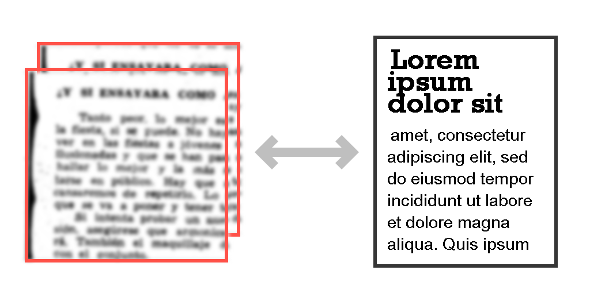
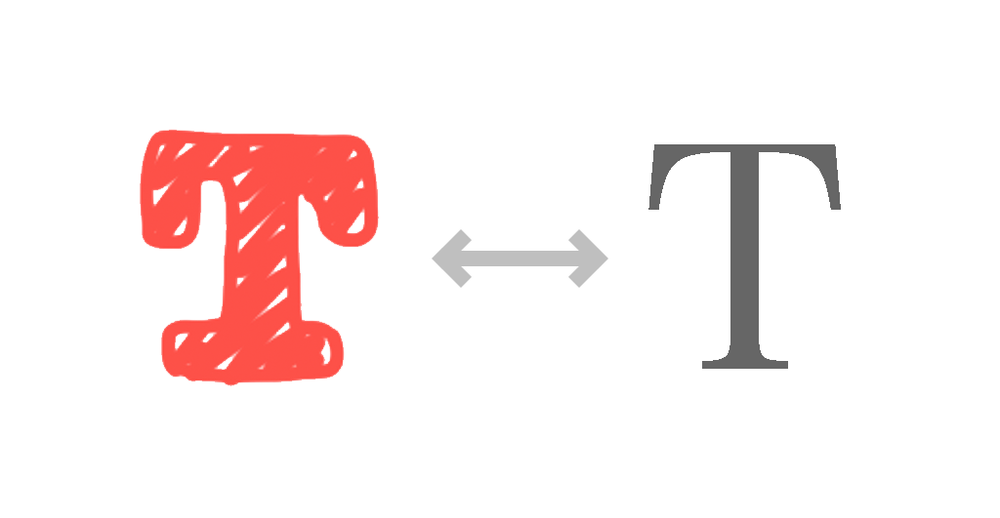

Our Motivations
Fonts make words more expressive,
both aesthetically and logically.
That's why we think it's important to detect them.
Even though we might not know what they mean, we have different feelings towards them. If we are told that these are restaurant logos (they are not*), we would intuitively think that the bottom one might be for one that serves French cuisine, while the top one is a family dinner.
Well, that's the power of fonts.

OCR (optical character recognition) technology, which converts imagesinto texts, is mature. However, font information is not generally preserved during the OCR process, meaning users need to reformat the whole document from scratch. This is inconvenient and can possibly introduce human errors in editing.
Converting scanned documents into digital formats
Match sketched designs with standard fonts
An existing app WhatTheFont uses deep learning algorithms to recognize 100,000 fonts. However, for hand-drawn characters, the app returns similar handwritten fonts (thanks to its large collection) instead of similar standard publication fonts that are ready for production. In this sense, the large collection actually hinders people’s ability to fast-prototype using pen and paper.
That's why we want to see if we can use simpler models, more cost effectively, to recognize limited but major fonts.
Our Approaches + Results
With synthetic data, we use machine learning methods, including random forest, logistic regression, and convolutional neural network (CNN), to distinguish 13 fonts. Model parameters are optimized, so are the data pre-processed with principal component analysis (PCA).
We synthesized images (32-by-32 pixels) of letters in 13 fonts. To mimic the real-life data, we applied 4 maniputations to each image: rotation, stretching, offset and noise.
This process enables us to generate as many data as we need for the training purposes, with a high flexibilty.
This ensures that the model can be well-trained and reduces the change of overfitting.

1,000 each font, but there really is no limit.
Random forest is an ensembled learning model using multiple decision trees. Each tree uses a randomly picked dataset by bootstrap method, and only considers a limited features that are randomly selected.
Thus, these parameters of the model are particularly of interest: depth of trees, number of trees, and number of features considered each time. We optimized these data using 10-fold cross validation, as well as repeated random sub-sampling.
(Note that to reduce the complexity for random forest, we only used letter "H" as a proof of concept, assuming the font recognition is based on pre-defined letter images (post OCR).)
Before optimization, after repeated 100 times random sub-sampling (training : testing = 9 : 1), the default random forest model gives an average accuracy of 65%.
(Slightly) better than random guessing. :P
the Depth of Trees
On the right shows the accuracy results with various depths of trees. Both random sub-sampling and 10-fold cross validation suggests that the optimal range for depth of trees is from 9 to 14.
Starting from depth of trees = 1, the accuracies for both training and testing data goes up as more depths provides more decision boundaries for finer and better classifications. However, when further increase the depth of trees, the training accuracy goes to 1, suggesting overfitting. This is verified by the decease of testing accuracy.
the Number of Trees
Using the method described above, it's found that within the tested range, the larger the number of trees, the better the accuracy (with no overfitting).
This is expected, as the more trees would average out the wrong classifications of each individual tree, statistically. (Basically the core idea behind ensemble learning.)
Due to the limitation of computation power, we chose number of trees = 1000 (100 if by default).

the Number of Features
Using the method described above, it's found that the optimal number of features is 500.
This is expected, as there is a trade-off between preserving the information and decorrelating the trees.
After optimization, the average accuracy goes up from 65% to 83% (1.3X enhancement).
The confusion matrix is shown below. An interesting finding is that by looking at large cross terms in the confusion matrix, one can also infer the similarity between fonts.
PCA selects major components that maximize the variantions among data. In terms of classification problems, such as the random forest font detection we are doing here, PCA can help maximize the seperation between classes, thus improve the accuracy.
One important parameter is how many components should we pass from PCA to random forest.
It's found that the best number of components is 25. This makes sense as we can see from the reconstructed images. As the number of components increase, important font information starts to appear. Later, further increasing the number of components would also pick up the noises, which dilutes the font information. At number of components = 25, the font is distinguishble and the image is clean.
When using PCA to pre-process the data and only selecting 25 components, optimized random forest still yeilds 83% accuracy, even we are using far less features.
This reduces the computation burden without sacrificing the accuracy.
We also tested logisitic regression. However, the accuracy is only 63%.
The differences between models are also shown in the receiver operating characteristic (ROC) curve. Note that since this is a multiclass problem, one-vs-all approach is used. The area under curve (AUC) is the average value for one model.
As we can see, optimized random forest has the best AUC, closely followed by optimized random forest with PCA. Logistic regression and default random forest have lower AUC.

We extended our project to test using home-made convolutional neural network (CNN)
For CNN based deep-learning method, we generated a comprehensive dataset. The dataset consists of 13,000 font images of letters a-z, A-Z and 0-9 in 13 different font families. The image samples have varying levels of random noise.
The deep learning model is implemented in keras and its architecure is shown below. It mainly consists of two convolutional layers and one hidden layer. To reduce the complexity, max pooling is used with pool size of 2 and stride of 2. This halves the matrix dimensions from 28x28x64 to 14x14x64. To avoid overfitting, dropout technique is used in two stages with quarter and half of neurons dropped in each. In the output layer, Binary Softmax classifier is used to classify an input as one of the 13 font families. The resultant model has 420,685 total trainable parameters, as shown below.
The above model is run for 10 epochs. The test accuracy is improved with each epoch iteration and reached the max 100% in 4 epochs. Train accuracy however is not no high, but it is lesser of concern than the test performance. The loss function below shows similar trend.
Numer of Neurons
Number of neurons in the hidden layer is a critical parameter for the model performance and complexity. To choose it judiciously, the neuron quantity is swept from 1 to 64 as shown below. From the plot, we can observe that the 32-neuron layer-based model offers the optimal solution for this problem.
Conclusions
(0. Machine learning is fun.)
1. Both random forest and CNN have shown promising results in font recognition, with high accuracies 83% and 100%, respectively.
2. Parameter optimization and PCA can enhance the performance of random forest very much.
3. (Bonus) Confusion matrix can actually tell which fonts are more similar.
Next Steps
We hope this project, achieved with simple models and low computation resources, can inspire people (including us) to further develop font detection to benifit industries and global communities.
Some extensions for future considerations:
1. Test with real-life data, even live data from video cameras.
2. Build plug-ins for applications such as PDF readers.
3. Adding detections of other aspects of fonts, such as color, size, highlight, bold, italic, and underscore.
...